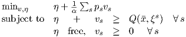
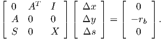
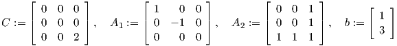
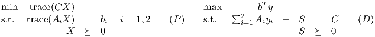
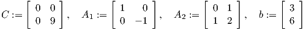
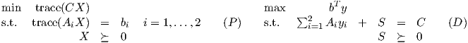

- Consider the following linear program with variables η and vs,s ∈ 1,…,S:

Note that x and ξs,s ∈ 1,…,S are parameters. Assume the values of Q(x,ξs),s ∈ 1,…,S,
ps > 0,s ∈ 1,…,S, and α > 0 are given. Also assume α < 1 and ∑
s=1Sps = 1.
- What is the dual linear program?
- Assume Q(x,ξ1) ≥ Q(x,ξ2) ≥… ≥ Q(x,ξS). Use complementary slackness to solve the
primal and dual problems.
- Let (Δx,Δy,Δs) solve

Assume rb≠0, S and X are positive definite diagonal matrices, and A is m×n with rank m. Show
that ΔxT Δs≠0.
- Let K be a cone. A function f : int(K) → IR is logarithmically homogeneous if there exists a
constant Θ such that f(tx) = f(x) - Θln(t) for all x ∈ int(K) and t > 0. (Here, int(K) denotes the
interior of K.) Show the barrier function for the semidefinite cone, namely f(X) = -lndet(X), is
logarithmically homogeneous. What is the value of Θ?
- Let

The primal and dual semidefinite programs are

Show that both (P) and (D) are feasible, but that the optimal value of (P) is not achieved.
- Let

The primal and dual semidefinite programs are

Show that (P) has an optimal value of 9. Is (D) strictly feasible? Show that y = (-1,2) is optimal
for (D). Show that the optimal X and S matrices are simultaneously diagonalizable.
-
- Formulate the primal problem in Question 5 as an equivalent second order cone program, and
solve it using CPLEX. Hint: in AMPL, you should be able to enter a constraint of the following
form when x, y, z are variables, with y,z ≥ 0:
subject to soc: x**2 <= y*z ;
- Formulate the dual problem in Question 5 as an equivalent second order cone program, and
solve it using CPLEX.
-
- Construct and solve a second order cone relaxation of the primal SDP in Question 4,
by requiring all the principal 1 × 1 and 2 × 2 subdeterminants of X be nonnegative.
- Construct and solve a second order cone relaxation of the dual SDP in Question 4, by
requiring all the principal 1 × 1 and 2 × 2 subdeterminants of S be nonnegative.
- Most semidefinite relaxations of combinatorial optimization problems result in a linear constraint on
the trace of the primal matrix X. For example, in the relaxation of MaxCut, the diagonal
entries are all required to equal one, so the trace must equal the number of nodes. The
relaxation of the combinatorial optimization problem gives a primal SDP; assume this primal
SDP and its dual are feasible. Show that if the linear constraints of the primal problem
imply that any feasible solution must satisfy trace(X) = a for some positive constant a
then the feasible region for the dual is unbounded, and strictly feasible dual solutions
exist.
- The project: Project presentations will be on Wednesday, May 4, from 3-6pm in Low 3039. Your
presentation should be no more than 15 minutes long. Please bring your presentation on a
memory stick, or something with a usb port. In order to encourage questions, your grade will
not be lowered if you are unable to answer questions from other students, but it may
be raised. Moreover, I may give some bonus points for asking a particularly good
question.
Handouts: Please prepare 10 copies of your slides, to be handed out before your
talk.
Reports: Your writeup is due by Tuesday May 3, on LMS. It can go to the same place as this
homework. It should describe the problem you worked on, what you did to solve the problem, and
the significance of what you did. You should also cite relevant references and state what was novel
about your approach. In addition, upload a copy of your slides.
For group projects, each group member should upload a description of his or her individual
contribution. (Plain text or pdf is fine.)